273 — Mapeo AWS, Azure, Google Cloud, Kubernetes y FinOps
Parte: 22 — Especializaciones, certificaciones y práctica profesional
Nivel: intermedio-avanzado · Horas estimadas: 4
Laboratorio: assessment · Estado: EXECUTABLE_CORE
🎯 Propósito
Traducir entre proveedores sin engañarse: dar el mapa de equivalencias entre las tres nubes, los contenedores y la disciplina de coste, y —más importante— dónde la equivalencia se rompe. La clase enseña el método de traducción por restricción en vez de por nombre, y las diferencias reales que este programa ha medido y que ninguna tabla de equivalencias recoge.
📚 Resultados de aprendizaje
Al finalizar podrás:
- Traducir entre proveedores por restricción, no por nombre de servicio.
- Reconocer dónde la equivalencia aparente esconde una diferencia real.
- Usar el mapa de las cinco capas para orientarse en una nube nueva.
- Evaluar una traducción con las preguntas que la validan.
- Aplicar el mismo método a los contenedores y a la disciplina de coste.
🧩 Conceptos centrales
| Concepto | Comprensión verificable |
|---|---|
traducción por restricción |
Buscar cómo la otra nube resuelve el mismo límite físico, en vez de buscar el servicio con nombre parecido. |
equivalencia falsa |
Dos servicios con el mismo propósito y garantías, límites o modelo de coste distintos. |
unidad de aislamiento |
El contenedor administrativo donde vive la separación: cuenta, suscripción o proyecto. |
plano de control |
La interfaz que crea y modifica recursos. Sus cuotas y su latencia difieren mucho entre nubes. |
portabilidad aparente |
Creer que usar la misma tecnología en tres nubes elimina las diferencias. No lo hace. |
coste de traducción |
Lo que cuesta operar en dos nubes: no es el doble de aprender, es el doble de operar. |
🧠 Modelo mental
Una especialización combina fundamentos, evidencia de proyectos y juicio bajo restricciones; una insignia sin práctica no sustituye esa combinación.
Aplicado a esta clase, separa siempre cuatro planos: intención (qué necesita el usuario), configuración (qué declaramos), estado observado (qué existe de verdad) y evidencia (cómo sabemos que cumple). Confundirlos produce diseños que se ven correctos en un diagrama pero fallan al operar.
🗺️ Flujo de razonamiento

📖 Desarrollo
1. Traducir por restricción, no por nombre
Las tablas de equivalencias por nombre producen errores caros. El método que funciona empieza por la restricción.
EL MÉTODO
1 ¿qué RESTRICCIÓN resuelve esto?
→ «necesito que un servicio pruebe su identidad ante
otro sin credencial permanente»
2 ¿cómo la resuelve la nube destino?
3 ¿con qué garantías, límites y coste?
4 ¿y con qué modo de fallo?
→ y solo entonces se escribe el nombre del servicio
→ empezar por el nombre es lo que produce las sorpresas
Y las cinco capas en las que conviene organizarse:
1 IDENTIDAD Y AISLAMIENTO
quién es quién, qué puede, y dónde vive la separación
→ cuenta · suscripción · proyecto
2 RED Y CONECTIVIDAD
direccionamiento, rutas, resolución de nombres, salida
a internet, interconexión
3 CÓMPUTO Y EJECUCIÓN
máquinas, contenedores, funciones, escalado
4 DATOS Y ESTADO
objetos, bloques, relacional, no relacional, analítico,
mensajería
5 OPERACIÓN
señales, registros, políticas, coste, cuotas
→ en toda nube existen las cinco
→ y aprender una nube nueva es rellenar esta rejilla, no
leer un catálogo
Y el mapa por restricción, que es lo transferible:
RESTRICCIÓN DÓNDE MIRAR EN CUALQUIER NUBE
«que un servicio pruebe quién es identidad de carga de
sin credencial fija» trabajo, federada
«separar entornos para que un unidad de aislamiento
fallo no cruce» administrativa
«que el tráfico solo llegue a segmentación de red y
quien debe» reglas por identidad
«que un cambio no afecte a todos despliegue progresivo
a la vez» del proveedor o propio
«que el dato sobreviva a un copia en otra unidad de
administrador comprometido» aislamiento, inmutable
«saber quién gasta qué» etiquetas y jerarquía
administrativa
«no pasar de N peticiones por cuotas del plano de
segundo al plano de control» control
→ y este mapa no cambia cuando cambian los productos
2. Dónde la equivalencia se rompe
Lo que ninguna tabla de equivalencias dice, y este programa ha medido.
1 LA UNIDAD DE AISLAMIENTO NO ES EQUIVALENTE
cuenta, suscripción y proyecto se parecen y difieren en
cuánto cuesta crear una nueva
qué se hereda desde arriba
y qué queda compartido aunque parezca separado
→ y de aquí salen los errores de aislamiento más caros
clases 219, 231
2 LOS LÍMITES POR DEFECTO SON MUY DISTINTOS
dos nubes con el «mismo» servicio de funciones tienen
concurrencias por defecto de órdenes distintos
→ y en la región secundaria, los valores por defecto
mandan clase 262, ley 26
3 EL MODELO DE COSTE CAMBIA LA ARQUITECTURA
donde el tráfico entre zonas se cobra, la arquitectura
correcta es otra
donde el análisis se cobra por dato leído, el formato y
la partición valen más que el motor clase 243, ley 28
→ y una traducción literal puede multiplicar la factura
4 LA COHERENCIA DE LOS ALMACENES DE OBJETOS
parecen iguales y sus garantías de lectura tras
escritura, de listado y de sobrescritura no lo son
→ y esto rompe canales de datos silenciosamente
ley 29
5 LA RESOLUCIÓN DE NOMBRES Y LA SALIDA A INTERNET
quién resuelve, desde dónde, y qué pasa con las
respuestas privadas difiere mucho clase 195
→ es la fuente número uno de «funciona en una nube y no
en la otra»
6 EL PLANO DE CONTROL
su latencia y sus cuotas de peticiones difieren
→ y una herramienta de infraestructura como código que
funciona en una nube se estrangula en otra
clases 128, 262
7 Y LA SEMÁNTICA DE LOS PERMISOS
denegar explícito, herencia, ámbito y evaluación no
funcionan igual
→ una política traducida literalmente puede conceder
más de lo que concedía clase 231
Y la regla que resume todo lo anterior:
LO QUE SE TRADUCE BIEN
el propósito y la forma de la arquitectura
LO QUE NO SE TRADUCE
garantías, límites, modelo de coste y modos de fallo
→ y esos cuatro son los que deciden si el sistema
funciona
→ por eso la traducción se VALIDA midiendo, no leyendo
3. Contenedores y la portabilidad aparente
El caso especial que más expectativas defrauda.
LO QUE SÍ APORTA UNA CAPA COMÚN DE CONTENEDORES
el empaquetado y el modelo de despliegue se parecen
las descripciones de carga de trabajo son casi iguales
y el conocimiento del equipo se traslada
LO QUE NO ELIMINA
la identidad y su federación con la nube
la red: direccionamiento, salida, balanceo, resolución
el almacenamiento persistente y sus garantías
el registro de imágenes y su disponibilidad
las cuotas del plano de control
el coste, muy distinto por nube
y la operación: actualizaciones, versiones y su ritmo
→ la portabilidad es del ARTEFACTO, no del SISTEMA
→ y la parte que no se traslada es la que da los
incidentes clase 185
Y el coste real de operar en dos nubes:
NO ES EL DOBLE DE APRENDER: ES EL DOBLE DE OPERAR
dos inventarios clase 253
dos modelos de permisos clase 231
dos formas de red clase 194
dos conjuntos de cuotas clase 262
dos catálogos de alertas y dos guardias clase 257
dos formas de facturar clase 270
y ensayos en las dos clase 261
→ y por eso multinube por defecto es caro
→ y multinube por una RAZÓN concreta —normativa,
adquisición, un servicio que solo existe en una— se
sostiene
y la pregunta que ordena la decisión
«¿qué riesgo concreto estamos comprando con este coste?»
→ si la respuesta es «no depender de un proveedor», hay
que cuantificar cuánto vale eso y compararlo
Y el mapa de la disciplina de coste, que también se traduce:
lo que existe en las tres, con otros nombres
jerarquía administrativa para atribuir
etiquetas y su obligatoriedad
exportación detallada de facturación
compromisos con descuento
presupuestos y alertas
y capacidad interrumpible
lo que cambia de verdad
qué se cobra por transferencia entre zonas y regiones
cómo se factura el almacenamiento frío y su
recuperación
cómo se cobra la analítica: por dato leído o por
capacidad reservada
y el retraso con que llega el detalle de coste
→ y esos cuatro cambian decisiones de diseño
clase 270
4. Cómo se valida una traducción
Una traducción sobre el papel no vale nada. Estas son las comprobaciones que la convierten en fiable.
LAS CUATRO PREGUNTAS DE VALIDACIÓN
1 ¿MISMAS GARANTÍAS?
coherencia, durabilidad, orden, exactamente una vez
→ y aquí casi siempre hay una diferencia
2 ¿MISMOS LÍMITES Y CUOTAS?
por defecto y ampliables, por región
3 ¿MISMO MODELO DE COSTE?
qué se cobra por operación, por dato, por hora
4 ¿MISMO MODO DE FALLO?
¿falla rápido o se degrada? ¿qué se ve cuando falla?
→ y las cuatro se responden con documentación y con una
prueba
Y la prueba mínima antes de comprometerse:
PROTOTIPO DE UNA SEMANA
el camino crítico de extremo a extremo
con identidad real, red real y datos de tamaño
realista
midiendo latencia, coste por operación y comportamiento
al fallar
y provocando un fallo a propósito clase 261
→ una semana de esto ahorra meses
→ y descubre las diferencias que ninguna tabla recoge
Y cómo se demuestra esta competencia:
LO QUE NO VALE
«conozco las tres nubes»
→ y la parte 22 predijo que esto rendiría peor que
conocer una a fondo clase 264
LO QUE VALE
«migramos el canal de datos y descubrimos que las
garantías de listado del almacén de objetos eran
distintas; lo detectamos con una prueba de una semana
antes de comprometernos»
«traducimos la política y concedía más de lo que
concedía la original; lo cogió la comprobación
automática»
«el mismo diseño costaba 3,2 veces más por el cobro de
tráfico entre zonas, y rediseñamos la colocación»
→ efecto, mecanismo y cifra clase 275
Y la lista de comprobación de la clase:
☐ traduzco por restricción, no por nombre de servicio
☐ uso la rejilla de cinco capas para orientarme
☐ compruebo garantías, límites, coste y modo de fallo
☐ sé que la unidad de aislamiento no es equivalente
☐ reviso los valores por defecto, sobre todo en la región
secundaria
☐ compruebo la semántica de permisos, no solo su forma
☐ verifico resolución de nombres y salida a internet
☐ vigilo las cuotas del plano de control
☐ no confundo portabilidad del artefacto con la del
sistema
☐ cuantifico el coste de operar en dos nubes
☐ hago un prototipo de una semana antes de comprometerme
☐ y provoco un fallo en ese prototipo
Y el cierre que enlaza con la clase siguiente: con el mapa y el método de traducción, queda la parte que examina esto por escrito y con tiempo limitado. Las preguntas de escenario y la estrategia de examen son la materia de la clase 274.
🔬 Ejemplo trabajado
CloudShop traduce tres piezas entre nubes. Lo que sigue son las cuatro diferencias que el prototipo de una semana encontró y ninguna tabla recogía, la política traducida que concedía de más, y la cuenta del coste real de operar en dos nubes.
Traducción 1 · El canal de datos.
qué se traducía
ingesta a almacén de objetos, catálogo, y consultas
analíticas clase 242
la tabla de equivalencias decía
almacén de objetos → almacén de objetos
catálogo → catálogo
motor de consulta → motor de consulta
→ traducción aparentemente trivial
Y lo que el prototipo de una semana encontró:
DIFERENCIA 1 · garantías de listado
el proceso dependía de listar un prefijo justo después
de escribir
→ en el origen, el listado era inmediato
→ en el destino, podía tardar
→ y el trabajo posterior procesaba ficheros de menos
SIN ERROR ley 29
cómo se detectó
prueba con 40.000 ficheros escritos y listados de
inmediato
→ 61 casos de listado incompleto
cómo se arregló
manifiesto explícito de ficheros, en vez de listar
DIFERENCIA 2 · modelo de coste de la consulta
origen por dato leído
destino por capacidad reservada
→ el mismo conjunto de 41 informes
origen, tras optimizar 12 USD/informe
destino con capacidad mínima por debajo del
umbral, pero con
suelo mensual
→ por debajo de cierto volumen el destino era más caro
→ y por encima, mucho más barato
→ la decisión dependía del volumen, no del motor
DIFERENCIA 3 · cuota del plano de control
la herramienta de infraestructura como código aplicaba
341 recursos
→ en el destino se estrangulaba a mitad
→ aplicación fallida de forma intermitente clase 128
→ se resolvió partiendo el estado y limitando el
paralelismo
DIFERENCIA 4 · zonas horarias en las particiones
la convención por defecto del catálogo difería
→ y las particiones diarias se desplazaban unas horas
→ los informes diarios cuadraban salvo en el límite del
día clase 243
Y la valoración:
coste del prototipo 1 semana, 1 persona
diferencias encontradas 4
que ninguna tabla de equivalencias recogía 4
que habrían llegado a producción sin error visible 2
→ las dos silenciosas eran las peligrosas
Traducción 2 · La política que concedía de más.
política original
permitir lectura de un prefijo concreto del almacén, a
un rol de servicio, con denegación explícita para todo
lo demás clase 231
la traducción literal
se mantuvo la concesión y se omitió la denegación
explícita
→ porque en la nube destino la herencia y la evaluación
funcionaban distinto y «parecía innecesaria»
lo que produjo
el rol heredaba desde el nivel superior un permiso de
lectura sobre el contenedor entero administrativo
→ y sin la denegación explícita, la herencia ganaba
→ el rol podía leer 214 conjuntos de datos en vez de 1
Y cómo se detectó:
no en la revisión humana: la revisión lo aprobó
lo cogió la comprobación automática de permisos efectivos
→ que compara «qué puede hacer realmente esta identidad»
antes y después clase 217
→ 214 recursos accesibles frente a 1 esperado
→ la lección: se compara el EFECTO, no el texto de la
política
→ y esa comprobación se añadió a la cadena para toda
traducción
La cuenta del coste real de operar en dos nubes.
CloudShop tenía una razón concreta para la segunda nube
un cliente del sector público exigía residencia en una
región que el proveedor principal no ofrecía
clase 280
y se midió lo que costaba mantenerla
inventario y etiquetado, segunda nube 0,4 personas
modelo de permisos y su auditoría 0,3
red y conectividad 0,3
cuotas y capacidad 0,2
alertas, guardia y procedimientos 0,6
facturación y atribución 0,2
ensayos 0,2
actualizaciones y versiones 0,3
──────
2,5 personas
más el coste de infraestructura 41.000 USD/mes
y el sobrecoste por menor volumen
(compromisos peores) +9 %
Y la decisión que se tomó con esa cifra:
ingresos del cliente que exigía la segunda nube
1,9 M USD/año
coste de mantenerla ~2,5 personas + 492.000
USD/año
→ se mantuvo, y con la cifra escrita en el registro de
decisión clase 272
→ con condición de revisión: «si estos ingresos bajan de
900.000, se revisa»
y lo que NO se hizo
no se replicó el resto de la plataforma en la segunda
nube «por si acaso»
→ solo lo que ese cliente necesitaba
→ 6 servicios de 41
Y la comparación con lo que se había propuesto al principio:
propuesta inicial «seamos multinube en todo, para no
depender de un proveedor»
coste estimado ~7 personas + 1,4 M USD/año
riesgo evitado no cuantificado
y la pregunta que la desmontó
«¿cuál es el escenario concreto del que nos protege, y
cuánto nos costaría si ocurriera?»
→ el escenario realista era una subida de precios o una
pérdida de servicio prolongada
→ y la protección real requería mantener el sistema
EJECUTÁNDOSE en las dos, no solo poder migrar
→ lo que multiplicaba la cifra
→ se decidió: multinube donde hay una razón concreta;
portabilidad razonable en lo demás
→ y «portabilidad razonable» se definió: contratos, datos
exportables y decisiones registradas, no abstracciones
propias clase 267
Y la rejilla de cinco capas, rellenada para orientarse.
el equipo mantuvo una tabla de una página por nube
capa qué mirar dónde difiere más
identidad unidad de aislamiento herencia y
y federación denegación
red direccionamiento, resolución de
salida, balanceo nombres privados
cómputo escalado, arranque, límites por
interrumpible defecto
datos garantías del almacén listado y coste
y del relacional por operación
operación señales, políticas, retraso del
cuotas, coste detalle de coste
→ una página por nube, actualizada cuando algo sorprende
→ y usada para entrar en una nube nueva en días
La lección que esta clase deja: la traducción del canal de datos parecía trivial y el prototipo de una semana encontró cuatro diferencias, dos de ellas silenciosas —un listado incompleto y un desplazamiento de particiones— que habrían llegado a producción sin producir ningún error. Y la política traducida pasó la revisión humana mientras concedía acceso a 214 conjuntos de datos en vez de uno: lo cogió comparar permisos efectivos, no leer el texto.
🧪 Laboratorio guiado
Ejecuta desde la raíz:
python classes/part-22-specializations-certifications-career/273-mapeo-aws-azure-google-cloud-kubernetes-y-finops/lab.py
El laboratorio selecciona el motor de práctica assessment y produce
lab_result.json. El escenario, sus comprobaciones y el artefacto esperado corresponden a
esta clase; no requiere credenciales y deja explícito qué debe revalidarse en un sandbox real.
- Lee
exercise.stepsy formula una predicción antes de ejecutar. - Ejecuta la práctica y verifica todos los elementos de
checks. - Provoca el caso de
negative_testy explica la señal observada. - Materializa
certification-mapenevidence/usando la plantilla indicada. - Para proveedor real, sigue
sandbox.requires, registra costo y ejecutadestroy.
Evidencia esperada
El artefacto principal es una evaluación por escenarios con rúbrica y evidencia trazable. Además, la entrega debe incluir el comando ejecutado, la salida estructurada y una conclusión que no exceda lo observado.
🏆 Reto verificable
Construye certification-map para el caso CloudShop. Incluye una alternativa descartada,
un supuesto que pueda falsarse, una prueba de fallo y una decisión de rollback.
✅ Criterio de aceptación
- [ ]
lab.pytermina con código 0 y genera JSON válido. - [ ] La entrega conecta al menos tres requisitos con mecanismos verificables.
- [ ] Existe una prueba positiva y una prueba negativa con evidencia.
- [ ] Seguridad, costo y operación aparecen como decisiones, no como anexos.
- [ ] Se declara una limitación y una condición que obligaría a revisar el diseño.
- [ ] Otra persona puede repetir el recorrido sin conocimiento tácito.
⚠️ Errores frecuentes
| Síntoma | Causa probable | Corrección |
|---|---|---|
| Un servicio equivalente se comporta distinto en producción | Se tradujo por nombre y no se compararon garantías, límites, coste y modo de fallo | Traduce por restricción y valida las cuatro preguntas con documentación y con un prototipo del camino crítico. |
| Una política traducida concede más de lo que concedía | La herencia y la evaluación de permisos difieren y la denegación explícita se omitió | Compara permisos efectivos antes y después, no el texto de la política; automatiza esa comprobación en la cadena. |
| El canal de datos procesa registros de menos sin dar error | Las garantías de listado y de lectura tras escritura del almacén no son iguales | Usa manifiestos explícitos en vez de listar, y prueba con volumen realista escribiendo y listando de inmediato. |
| La infraestructura como código se aplica a medias e intermitentemente | Se alcanzan las cuotas de peticiones del plano de control, que difieren por nube | Parte el estado, limita el paralelismo y vigila la cuota del plano de control como una más del inventario. |
| El mismo diseño cuesta varias veces más en la otra nube | El modelo de coste cambia lo que es una buena arquitectura | Revisa qué se cobra por transferencia, por operación y por dato leído; rediseña colocación y formato antes de migrar. |
| Se adopta multinube por no depender de un proveedor y el coste se dispara | No se cuantificó el riesgo evitado ni el coste de operar dos nubes | Exige un escenario concreto y su coste; multinube donde hay una razón, portabilidad razonable en lo demás. |
🛡️ Seguridad, ética y costo
Trabaja con cuentas propias o sandboxes autorizados. No publiques secretos, identificadores reales ni datos personales. Antes de crear recursos pagos define presupuesto, etiquetas y comando de destrucción; después verifica que no queden recursos huérfanos. Los ejemplos locales enseñan contratos, pero no certifican cumplimiento ni disponibilidad de producción.
❓ Preguntas de comprobación
- ¿Por qué se traduce por restricción y no por nombre de servicio?
- ¿Cuáles son las cinco capas de la rejilla y para qué sirven?
- ¿Qué cuatro cosas no se traducen nunca y por qué deciden el resultado?
- ¿Qué aporta y qué no aporta una capa común de contenedores?
- ¿Qué comprueba un prototipo de una semana que ninguna tabla recoge?
🔗 Referencias
- AWS (2024). Compare AWS and Azure services. https://learn.microsoft.com/azure/architecture/aws-professional/services
- Google Cloud (2024). Google Cloud for AWS professionals. https://cloud.google.com/docs/get-started/aws-comparison
- CNCF (2024). Kubernetes conformance and portability. https://www.cncf.io/certification/software-conformance/
- FinOps Foundation (2024). FOCUS: FinOps cost and usage specification — coste comparable entre nubes. https://focus.finops.org/
- Brewer, E. (2012). CAP twelve years later: how the rules have changed — por qué las garantías no se traducen. https://www.infoq.com/articles/cap-twelve-years-later-how-the-rules-have-changed/
- Documentación oficial vigente del servicio implementado; registra URL y fecha de consulta.
📥 Descargar: Parte 22 en PDF · Manual integral